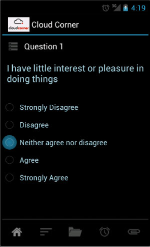
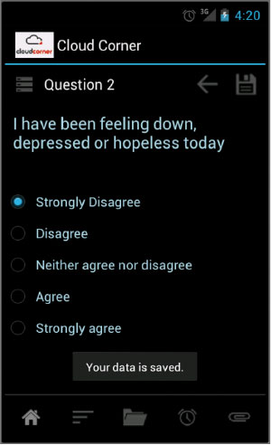
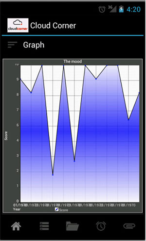
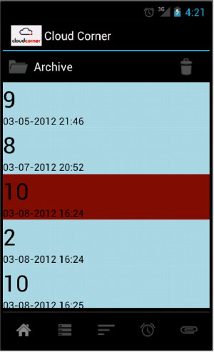

We, as a group in this course, designed and implemented a depression tracking android app based on PHQ-2. Our app aims to help patients track their depression and provide the clinicians a reference about the status of their patients as well. Our app would ask the two questions periodcally in order to test whether the user is suffering from depression. Meanwhile, we stores the results of every test in order to generate a graph which clearly displays the trend of depression score.
   